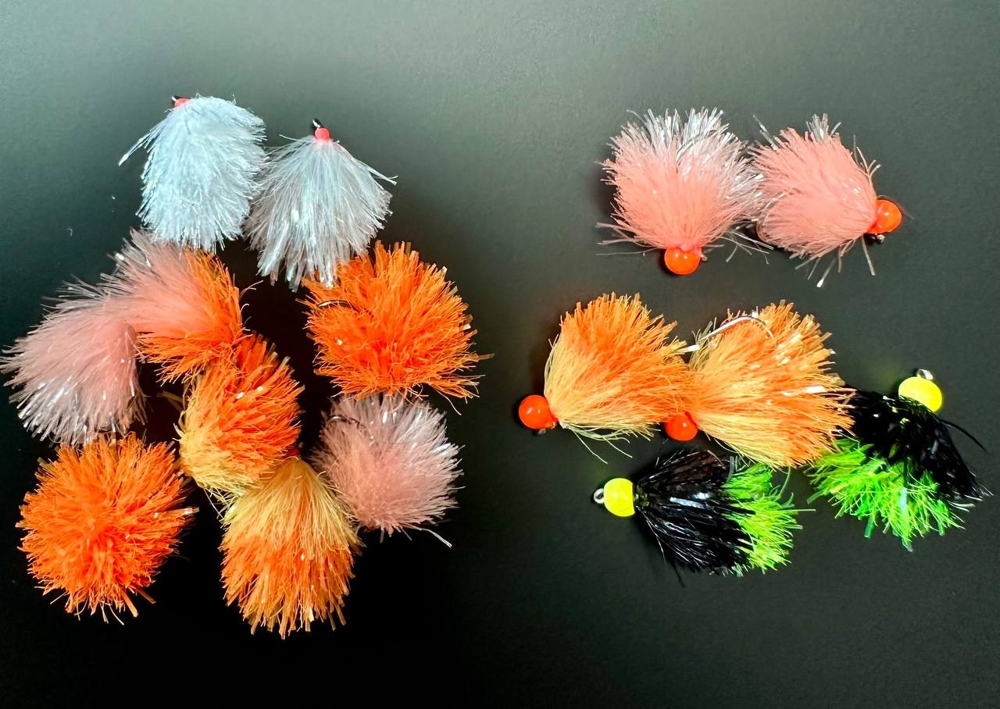
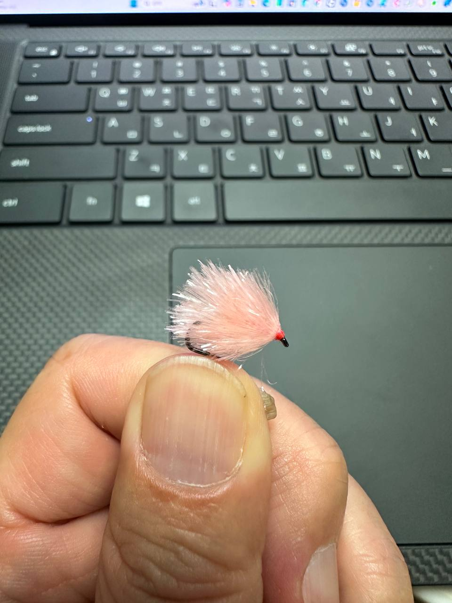
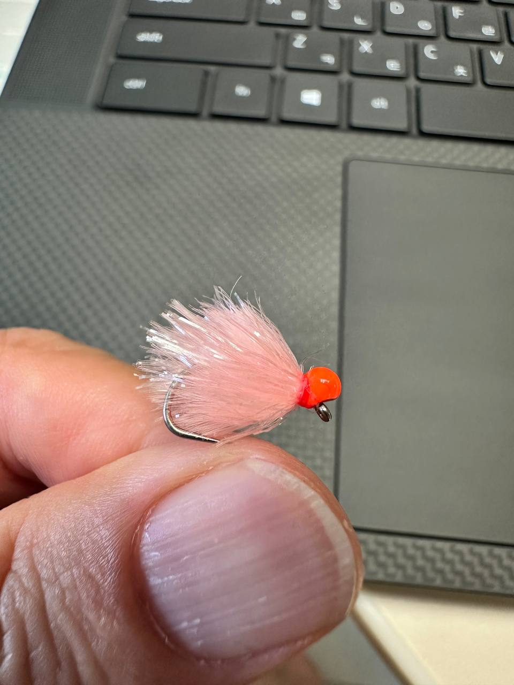

30초 정의
BLOB은 프리츠·젤리·에그스타시를 훅에 풍성하게 감은 정수용 패턴이다.
특정 곤충 한 마리를 복제하기보다 다프니아 구름, 에그 덩어리, 정체불명의 먹이를 암시한다.
그래서 자연스러운 모방과 공격 반응 유도 사이를 자유롭게 오간다.
The fly that moves between imitation and attraction
먹이인가, 자극인가 - 정지와 리트리브를 모두 소화하는 전층 패턴

BLOB은 프리츠·젤리·에그스타시를 훅에 풍성하게 감은 정수용 패턴이다.
특정 곤충 한 마리를 복제하기보다 다프니아 구름, 에그 덩어리, 정체불명의 먹이를 암시한다.
그래서 자연스러운 모방과 공격 반응 유도 사이를 자유롭게 오간다.
MOVE · 언웨이티드
FM5095 #12 · 8 mm Plush / Jelly Biscuit
싱킹팁·풀싱킹
HOLD · 웨이트
H250BL #14 · 1/8 지그오프 비드
인디케이터 현수
핵심 컬러
Sunburst · Orange · Biscuit
Egg White · Black/Chartreuse
에그처럼 멈춰 보여주고, 루어처럼 움직여 깨운다. 수심은 라인과 비드가 만들고, 블롭은 색과 펄스로 입질의 이유를 만든다.
How to fish it
넓게 찾을 때는 MOVE, 정확히 세울 때는 HOLD.

MOVE · SINKING LINE활성이 높거나 먹이가 불명확할 때
Intermediate → Medium → Fast sink 순으로 수심을 확장한다.

HOLD · INDICATOR차가운 물·저활성·다프니아 섭식
바닥이 아니라 물고기가 떠 있는 정확한 층이 목표다.